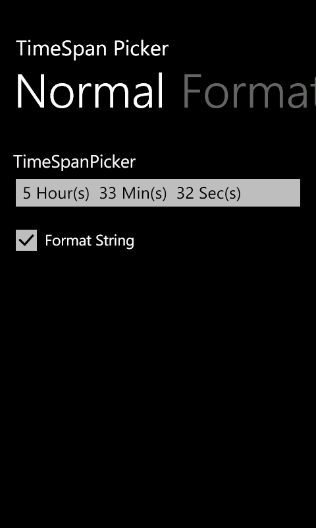
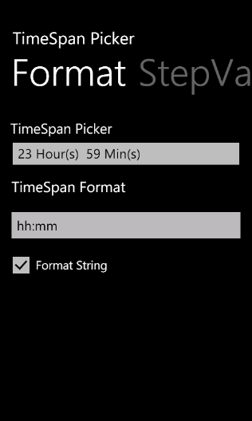

TimeSpan Picker control supports four timespan elements. They are:
· Day
· Hour
· Minute
· Second
You can customize the timespan format as needed.
Customizing the timespan format
You can customize the timespan format using the ValueStringFormat property. Default timespan format is dd:hh:mm:ss.
The following code illustrates how to set timespan format as hh:mm:ss:
|
[xaml] <syncfusion:TimeSpanPicker x:Name="timespanpicker" Text="TimeSpanPicker" ValueStringFormat="hh:mm:ss" MaxValue="10:11:1" MinValue="2:1:1" Value="5:33:32" StepValue="2:2:2" FormatString="True"/> |
|
[C#] TimeSpanPicker timespanpicker= new TimeSpanPicker(){ Text="TimeSpanPicker", ValueStringFormat="hh:mm:ss", MaxValue= new TimeSpan(10,11,1), MinValue=new TimeSpan(2,1,1), Value=new TimeSpan(5,33,32), StepValue=new TimeSpan(2,2,2), FormatString=true}; |

Figure 77: Hour, minutes and seconds are set as TimeSpan format.
The following code illustrates how to set timespan format as hh:mm:
|
[Xaml] <syncfusion:TimeSpanPicker x:Name="timespanpicker" Text="TimeSpanPicker" ValueStringFormat="hh:mm" Value="10:23:59" FormatString="True"/>
|
|
[C#] TimeSpanPicker timespanpicker= new TimeSpanPicker(){ Text="TimeSpanPicker", ValueStringFormat="hh:mm", Value=new TimeSpan(10,23,59), FormatString=true};
|

Figure 78: Hour and minutes are set as TimeSpan format.